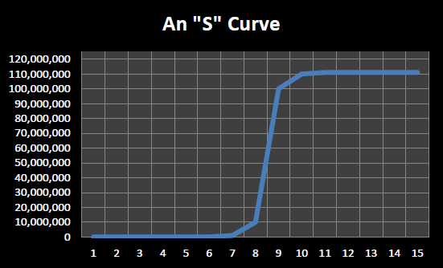

Common sense would seem to dictate that the exponentially doubling that information technology has been undergoing cannot continue indefinitely. When it comes to the original formulation of Moore’s Law for example there must be a limit to the size of individual transistors, yes? As of 2013, “leading edge” fabrication technologies produced integrated circuits with minimum feature sizes in the 10 – 40 nanometer range.
What this means is that some features, such as a wire, are no more than 40 nanometers wide. What is a nanometer? A nanometer is one billionth of a meter (10-9 meters). A strand of the DNA molecule is about 3 or 4 nanometers wide. Thus the minimum feature size of components in our most advanced integrated circuits is somewhere in the range of 3 to 10 times wider than the DNA double helix.
Our devices are nearing (some might argue already are at) molecular level scales. Molecules are, of course, composed of individual atoms. The diameter of a carbon atom is 0.15 nanometers – which is only about 100 times smaller than minimum feature size in some of today’s (2013’s) most advanced integrated circuits. Since minimum feature size cannot shrink below one atom wide, it looks like the reign of Moore’s Law, at least in its ‘standard’ interpretation, is about over – a factor of 100 is less than 7 doublings (27= 128) which would take 14 years to achieve if doublings took place at the historic rate of about once every 2 years.
This should not be surprising. Individual technologies tend to follow what are called “S” curves rather than true exponentials. An “s” curve, which is illustrated in , is indistinguishable from an exponential in its early phases. Both begin by showing very little apparent progress over a long span of time, then suddenly progress appears to “take off”. In an “s” curve, after this spurt of rapid progress, things settle down into a state where only minor, incremental progress is made. In a true exponential, things never settle down, but continue to accelerate without end.
An “s” curve
Progress in aviation technology fits the “s” shape curve nicely. For thousands of years Man dreamed of being able to fly like a bird. For most of this time no real progress was made on the problem. The first manned hot air balloon flight didn’t occur until November 1783 (about 230 years ago). It took another 120 years, until December 1903 (about 110 years ago) for the first powered airplane flight to occur. Just over half a century later, in October 1958, transatlantic passenger jet service was born with the introduction of the British Overseas Airways Corporation Comet 4. In the half century or so since the introduction of the passenger jet, transatlantic flight has certainly become much more common and much less expensive, but flight times have remained relatively constant – in fact with increased airport security, overtaxed air traffic control systems, and the retirement of the Concorde supersonic passenger plane, transatlantic travel time has actually increased in recent years.
Will advances in computing follow a trend similar to aviation (and many other technologies)? Will the exponential growth in computing technologies soon come to an end?
As mentioned earlier some technologists, such as Ray Kurzweil, argue that the exponential growth in computing extends back much farther than the integrated circuit era of Moore’s Law and will continue far after the increasing transistor density of Moore’s Law comes to an end.
contains a graph produced by Ray Kurzweil, and posted to Wikipedia as part of the “Accelerating Change” article, that captures Kurzweil’s view that while individual computing technologies may follow “S” curves, overall progress in computing remains exponential by periodically switching to new underlying technologies.[7] According to this view, the electro-mechanical era of computing essentially began with Herman Hollerith’s tabulating machine for the 1890 census, then moved on to relays in the 1930’s, then vacuum tubes in the 1940’s and 1950’s, then transistors in the 1960’s, and finally integrated circuits in the 1970’s through today. While each of these underlying technologies eventually become mature, reaching their limits of speed and reliability, by leaping from one technology to another, gains in computing capabilities have continued to accelerate at an exponential rate for well over a century.
Given the chip designs that are already “in the pipeline”, Moore’s Law seems assured of continuing in the near term – say the next three to five years. In the longer term there are many exciting technologies on the horizon. The next section of this chapter presents a number of these technologies that show promise for delivering vastly more powerful computers than exist today – technologies that could continue generating exponential gains in computing for many decades to come.

Kurzweil’s Law of Accelerating Returns
(from Wikipedia “Accelerating Change” http://en.wikipedia.org/wiki/File:PPTMooresLawai.jpg)
{kind=link}
Footnotes